Aktor - ponad 10 lat na scenie i przed kamerą. Teatr, film, telewizja, a od niedawna także motion capture tworzone z pomocą AI.
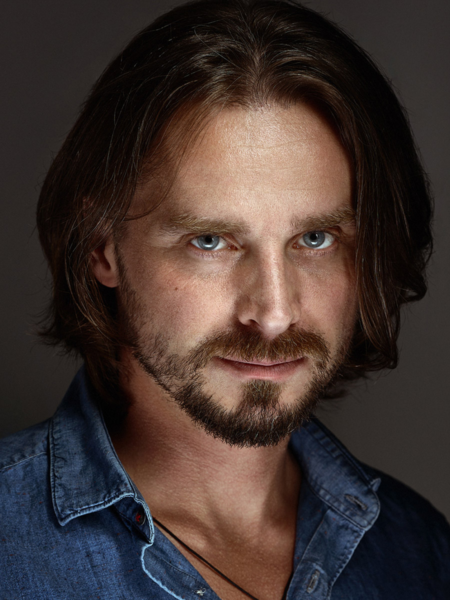
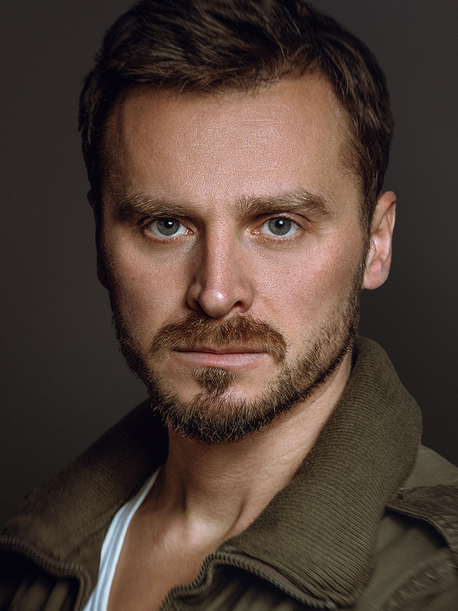
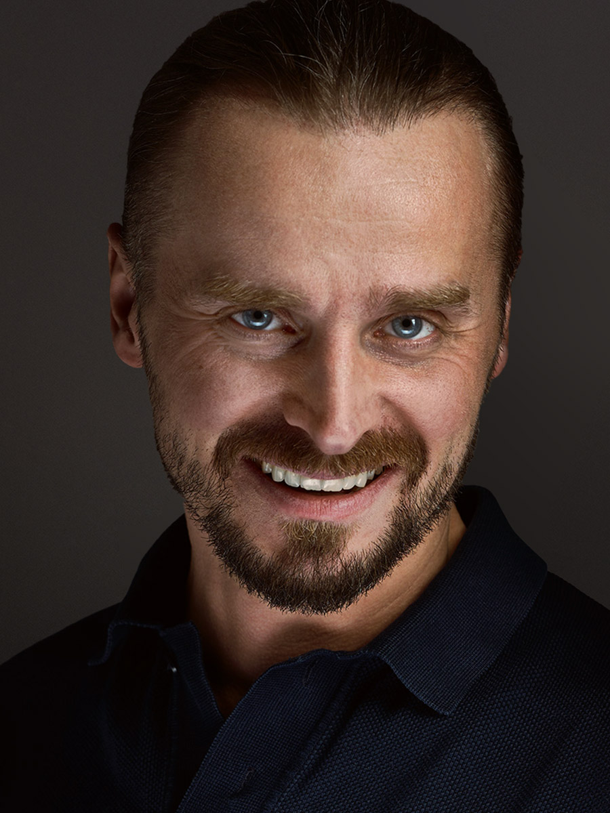
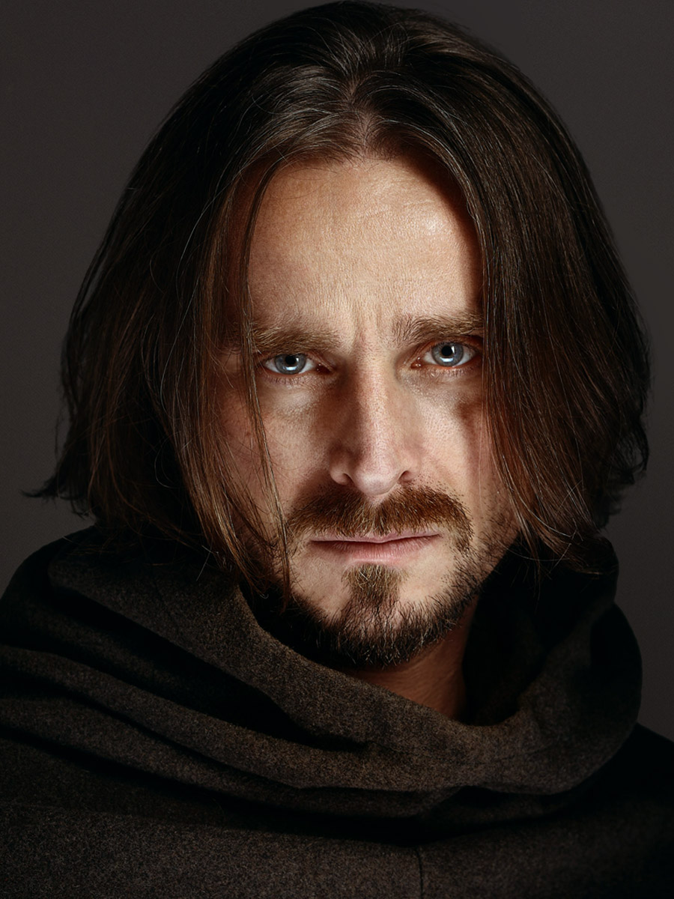
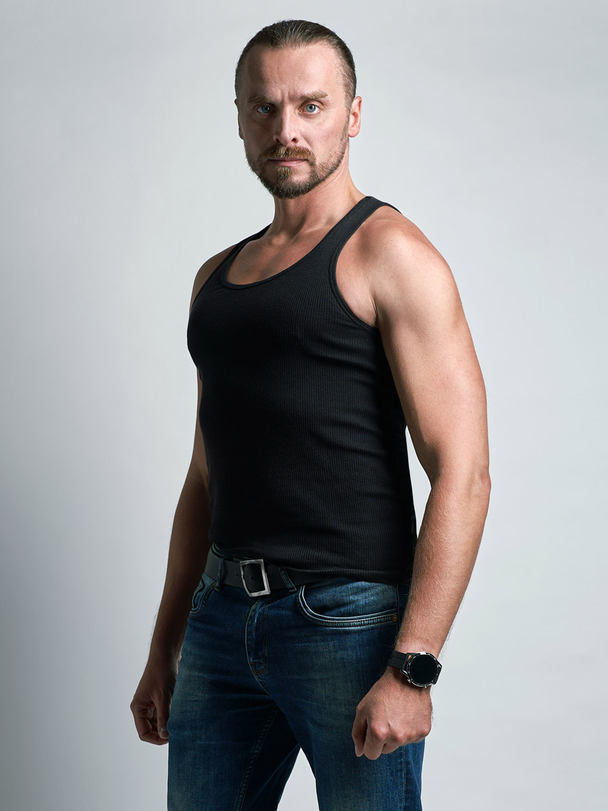
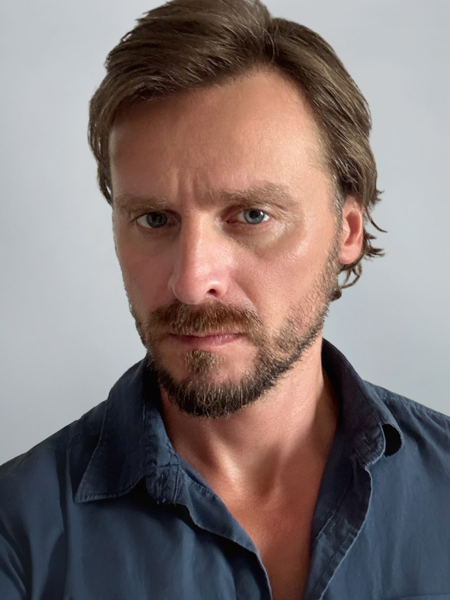
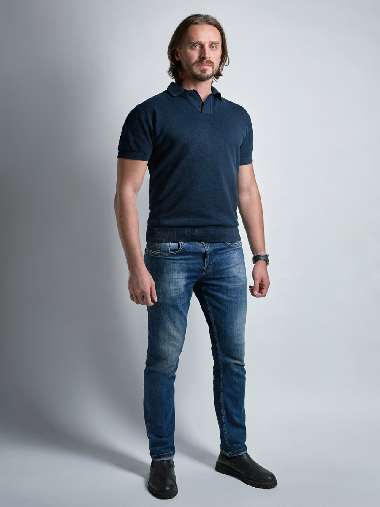
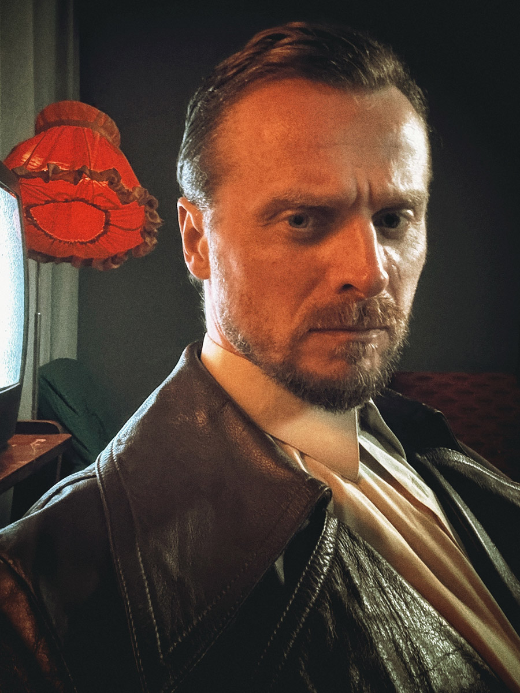
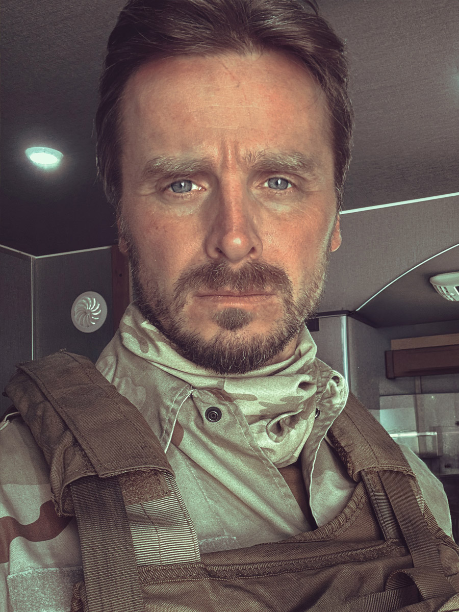
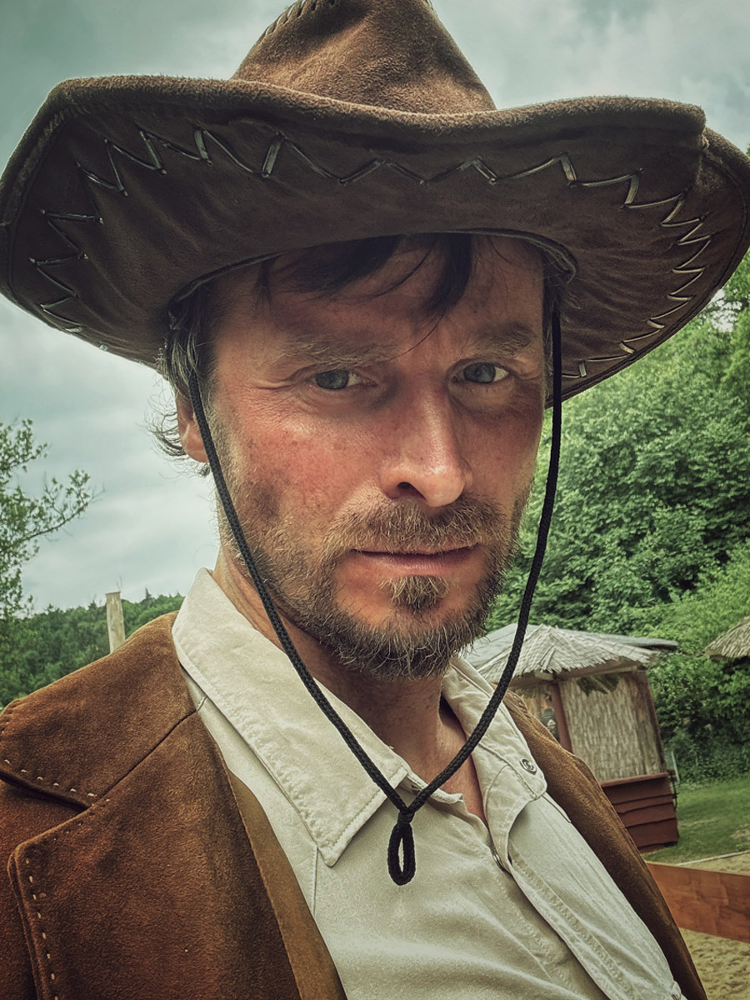
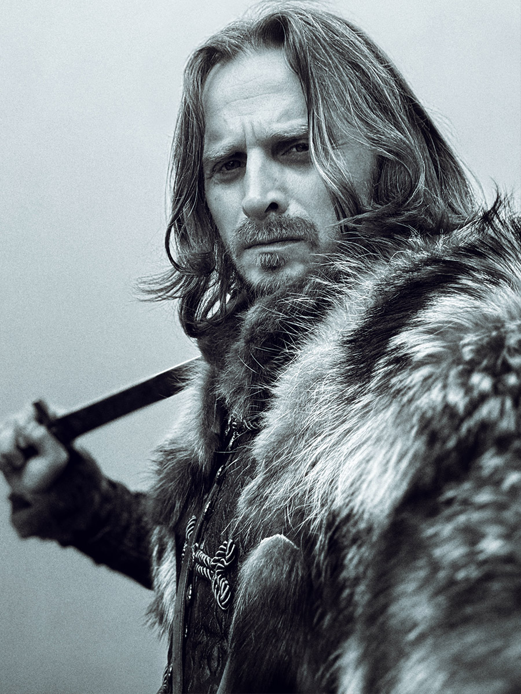
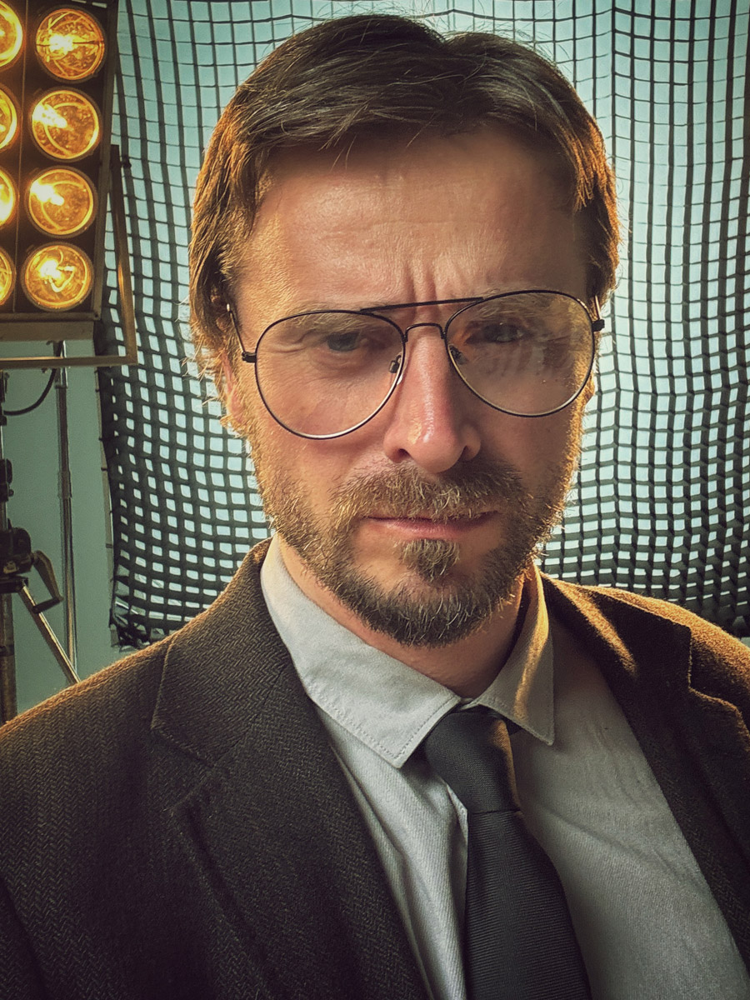
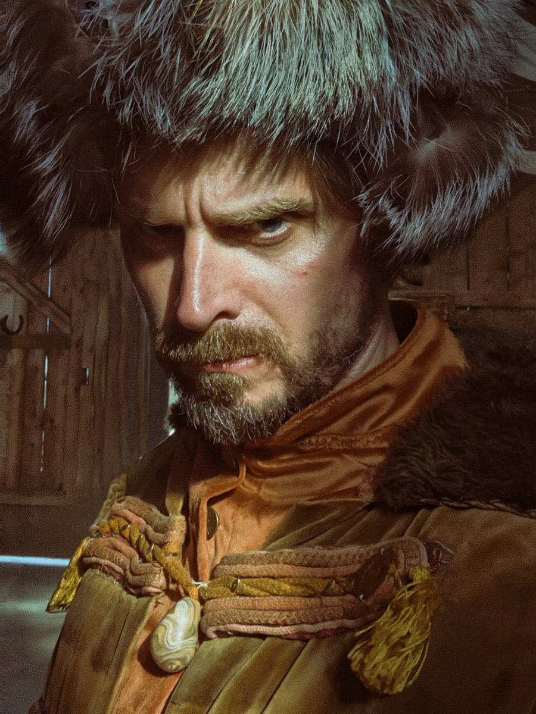
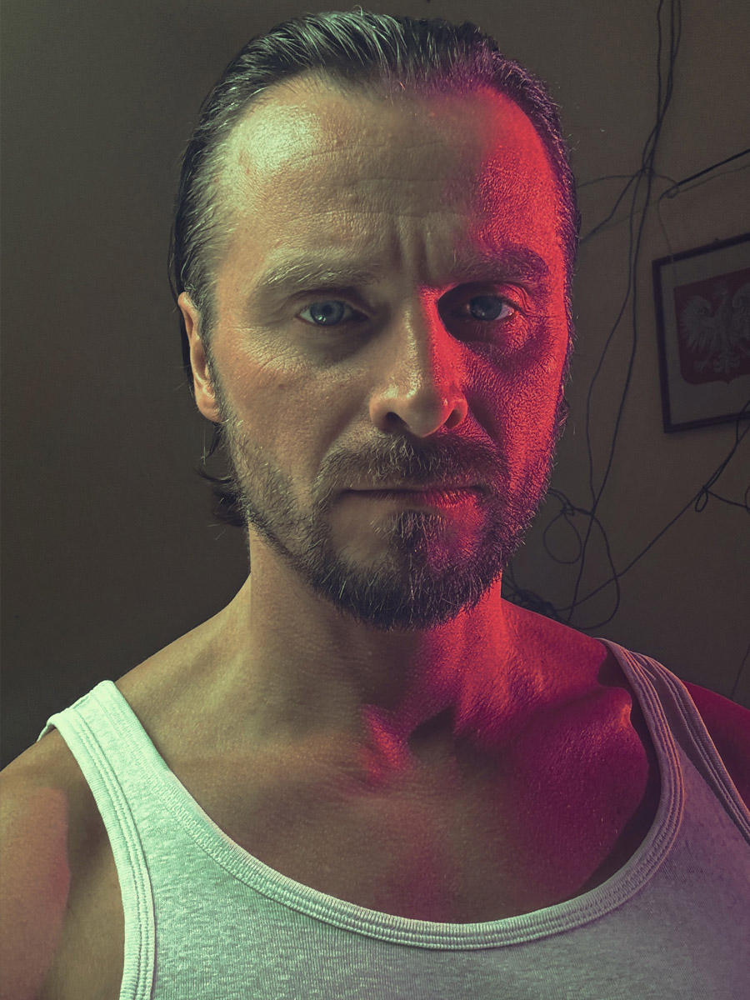
Aktor teatralny, filmowy i telewizyjny. Absolwent krakowskiej ASP, wydziału aktorskiego KSA oraz Akademii Filmowej AMA.
Na co dzień aktor Krakowskiego Teatru Komedia oraz Krakowskiej Sceny Klasycznej, działającej na deskach Teatru Praska 52 w Krakowie. Mam na koncie wiele ról filmowych, teatralnych i telewizyjnych - zajmuję się także dubbingiem.
Tancerz krakowskiego zespołu tańca irlandzkiego i szkockiego Comhlan oraz wieloletni członek grupy rekonstrukcji historycznej Małopolskiej Zgrai Sarmackiej. Trenowałem szermierkę artystyczną, gram na gitarze i śpiewam.
Rzemiosło aktorskie łączę dziś z nowym językiem obrazu - wizualami generowanymi z pomocą AI, które pozwalają opowiadać historie w formie, jakiej wcześniej nie było.
Aktorstwo to praca z emocją, obecnością i prawdą postaci. AI to nowe narzędzie obrazu. Łączę jedno z drugim - przenoszę autentyczną grę w wizuale generowane z pomocą sztucznej inteligencji, tworząc formy, których klasyczna produkcja nie umożliwia. To przestrzeń, w której rzemiosło i technologia pracują razem, zamiast się wykluczać.